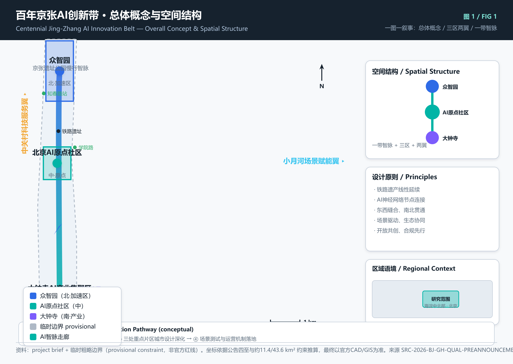
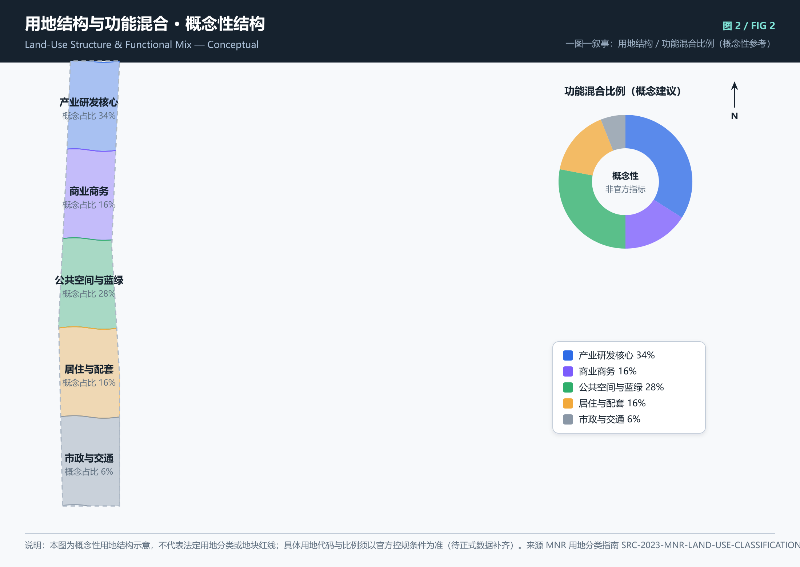
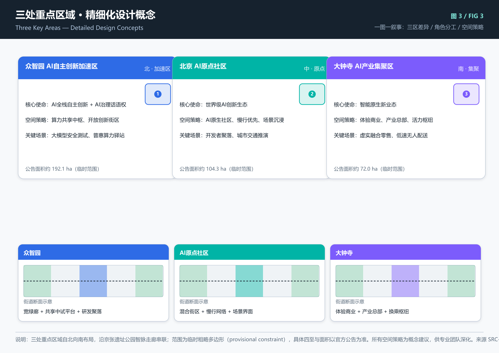
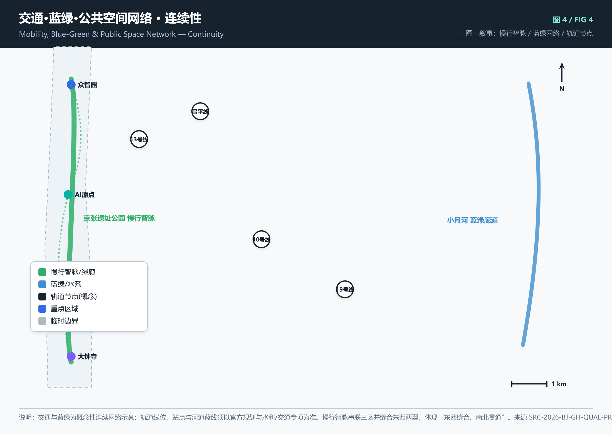
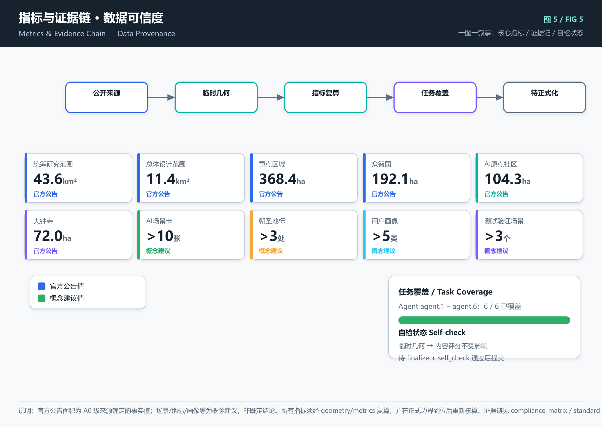

Jing-Zhang AI Spine · 百年京张AI创新带城市设计开源征集方案
方案状态：设计稿就绪 · 待 finalize / self-check · provisional geometry北至北五环路，东至京藏高速，南至西直门外大街，西至万泉河路。
京张遗址公园周边 1–2 km 城市与产业走廊；临时粗略边界。
众智园、AI原点社区、大钟寺三处重点片区。
注：当前空间范围使用仓库提供的临时粗略边界（provisional constraint），仅用于 AI 生成与可视化，不构成官方红线，待正式数据到位后替换。

图 1 · 总体概念与空间结构：以京张铁路遗址公园为慢行智脉，串联众智园、AI原点社区、大钟寺三处重点片区，东西分别依托中关村科技服务翼与小月河场景赋能翼。
中文主名称：京张智脉；英文：Jing-Zhang AI Spine。以“铁路遗产的线性延续”与“AI神经网络的节点连接”为意象，形成可延展的视觉识别方向。

图 2 · 概念性用地结构：以产业研发核心、商业商务、公共空间与蓝绿、居住配套、市政与交通五类用地构成总体设计范围的功能骨架。
本图为概念性空间示意，不代表法定用地分类或地块红线；具体用地代码、容积率、建筑高度等待官方控规条件补齐。

图 3 · 重点区域精细化设计概念：众智园（北·加速区）、北京AI原点社区（中·原点）、大钟寺（南·产业集聚区）。
北 · 加速区 · 192.1ha
承担“AI全栈自主创新体系”与“AI治理全球话语权”。概念策略：算力共享中枢、自主创新加速器、开放创新街区。
中 · 原点 · 104.3ha
承载“世界级AI创新生态”。概念策略：AI原生社区、开发者聚落、混合街区、慢行优先、场景沉浸。
南 · 集聚 · 72.0ha
聚焦“智能原生新业态”。概念策略：智能原生消费与商务、体验商业、产业总部、活力枢纽。

图 4 · 慢行智脉与蓝绿网络：以京张遗址公园为南北绿脊，小月河为东侧蓝绿廊道，轨道节点为换乘锚点，形成连续公共空间与慢行系统。
轨道线位、站点、河道蓝线均为概念性示意，须以官方交通、水利、文保等专项规划为准。

图 5 · 指标与证据链：官方公告面积为事实值；场景、地标、画像数量为概念建议值，须在后续 finalize 中经 geometry/metrics 复算。
| 指标 | 数值 | 单位 | 来源 | 可信度 |
|---|---|---|---|---|
| 统筹研究范围 | 43.6km² | sqm | 官方公告 | high |
| 总体设计范围 | 11.4km² | sqm | 官方公告 | high |
| 重点区域 | 368.4ha | sqm | 官方公告 | high |
| 众智园 | 192.1ha | sqm | 临时几何/公告值 | provisional |
| AI原点社区 | 104.3ha | sqm | 临时几何/公告值 | provisional |
| 大钟寺 | 72.0ha | sqm | 临时几何/公告值 | provisional |
| AI场景卡 | 12张 | cards | 概念建议 | conceptual |
| 朝圣地标 | 4处 | nodes | 概念建议 | conceptual |
| 用户画像 | 5类 | personas | 概念建议 | conceptual |
| 产业测试验证场景 | 3个 | scenarios | 概念建议 | conceptual |
| Agent 任务覆盖 | 6/6 | tasks | 任务书 | high |
开放实验室、共享数据集、论文与代码共现空间。
围绕轨道站点形成高密度混合街区，配套居住、咖啡、算力驿站。
大钟寺片区体验型商业，虚实融合橱窗、智能导购与无人配送节点。
AR/多语言叙事讲解京张铁路历史、中关村创新史与AI进展。
基于小月河与绿廊的慢行、健身与生态监测场景。
众智园片区提供普惠算力、模型微调和数据沙箱。
城市运行模拟、交通流量推演、公共事件预演。
在限定公共道路与园区内提供接驳、配送、巡检服务。
以京张铁路工业遗存为背景的生成式艺术、光影节、音乐节。
线下 meetup、黑客松、论文精读会、基金会驻地。
伦理审查、人机对齐、隐私保护技术的城市级沙盒。
无障碍交互、代际共学、社区级AI辅助服务。
需要实验室、算力、学术网络与跨学科交流空间。
需要快速原型、开源社区、资本对接与低成本办公。
需要场景测试、产业合作、政策与标准对话平台。
需要科普、工作坊、实习与跨龄共学空间。
需要无障碍蓝绿空间、文化体验、便捷服务与参与式治理。
位于京张遗址公园，以老站台改造为AI与铁路文化交汇的展示馆、起点广场与活动客厅。
北京AI原点社区核心节点，记录中国AI发展关键人物、开源项目、基准测试与社区贡献。
以智能原生商业、无人配送、生成式体验为特色的城市客厅，体现AI融入日常。
“京张智脉年度贡献榜”、开源之星、场景先锋、青年创新者等荣誉节点，嵌入公共空间与数字界面。
京张AI大会（旗舰）、开发者黑客松、开源模型挑战赛、AI+城市工作坊、铁路文化节。
以开源基金会、高校实验室、企业研究院为节点，形成“贡献—认证—就业/创业”转化路径。
发布场景需求清单、公开招募测试主体、伦理与安全审查、成果入库与复用。
多语言品牌叙事、国际媒体报道、海外开发者访华路线、产业招引落地服务。
| 任务 | 状态 | 对应成果 |
|---|---|---|
| agent.1 一带总体概念与功能统筹 | 已覆盖 | 命名体系、三定位五功能、总体结构图 |
| agent.2 AI全栈生态与世界级创新生态 | 已覆盖 | 三区角色、生态图谱方向、产业空间映射 |
| agent.3 AI+场景赋能新范式 | 已覆盖 | 12 张场景卡、3 个测试场景、5 类画像 |
| agent.4 AI公共空间与朝圣地标 | 已覆盖 | 4 处地标/节点、荣誉展示体系 |
| agent.5 文化融合叙事 | 已覆盖 | 铁路/中关村/AI 三层叙事 |
| agent.6 全球活动与长期运营 | 已覆盖 | 年度活动、开发者社区、场景开放、传播转化 |
所有成果均为开放共创建议，不替代正式规划，不构成政府审定结论。空间落地建议应表述为“概念建议”“参考方案”“可供专业团队深化研究”。